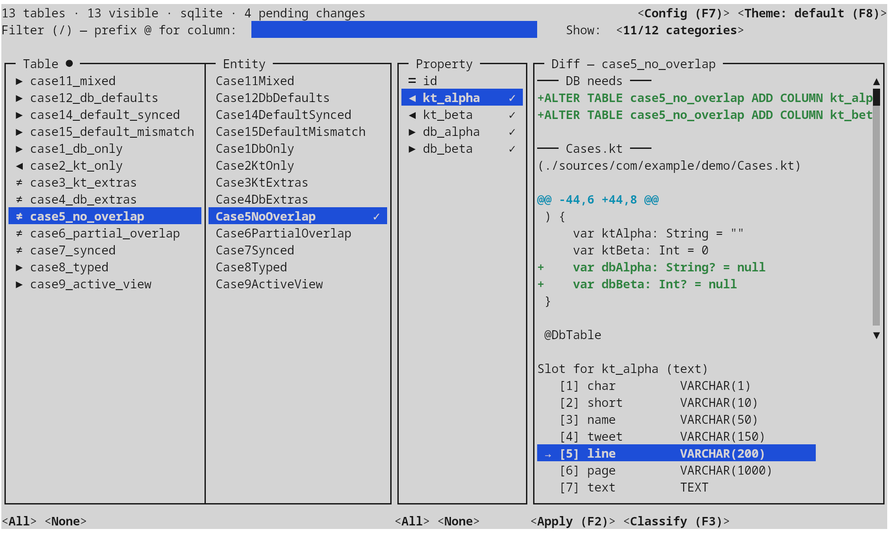

Plain Kotlin classes, convention over configuration. CRUD, transactions, lazy refs, paged queries — same API across JVM, Android, iOS, and native Linux/Windows/macOS.
// Plain class. Fields match columns by convention. data class User( @DbField(primaryKey = true) var id: Int = 0, var email: String = "", var name: String = "" ) val stormify = Stormify(dataSource)
// CRUD with no boilerplate val user = stormify.create(User(email = "ada@example.com")) val adults = stormify.read<User>( "SELECT * FROM user WHERE age > ?", 18) user.name = "Ada Lovelace" stormify.update(user) stormify.delete(user)
// Nested transactions via savepoints stormify.transaction { val user = create(User(email = "ada@example.com")) create(Profile(userId = user.id)) transaction { create(AuditLog("signup", user.id)) // rollback-safe savepoint } }
Field-to-column by convention. Annotate only the exceptions.
Create, read, update, delete — plus batched bulk variants.
@Id, @Table, @Column — drop in without rewriting.
Naming policies + custom primary-key resolvers for legacy schemas.
Parameters auto-expand; map rows to objects, primitives, or maps.
PagedList for UI, PagedQuery for stateless REST.
by db() delegates load related entities on access.
Call procedures with in/out/inout parameters natively.
Savepoint-backed rollback/commit at any depth.
Batched create/update/delete for high-throughput loads.
Multi-column primary keys without extra configuration.
Stored as int or string, with custom mapping hooks.
First-class idiomatic APIs on both: Stormify and StormifyJ.
Suspend-based transactions, built-in pool, native cancel wiring.
PostgreSQL, MariaDB, Oracle, MSSQL, SQLite — no JVM, no JDBC.
KSP-generated entity info on native, Android, iOS — no runtime reflection.
Diff DB ↔ entities; emit a SQL migration and a git apply patch. TUI or headless.
// Any JDBC DataSource — Hikari, DBCP, plain driver, anything val stormify = Stormify(dataSource).asDefault()
// Native — no JVM, no JDBC, pure C-library driver val stormify = Stormify( KdbcDataSource("jdbc:sqlite:/tmp/app.db") ).asDefault()
// Any JDBC DataSource — Hikari, DBCP, plain driver, anything StormifyJ stormify = new StormifyJ(dataSource).asDefault();
val byId = stormify.findById<User>(1) val active = stormify.findAll<User>( "WHERE status = ?", "active") val one = stormify.readOne<User>( "SELECT * FROM user WHERE email = ?", "ada@example.com")
val byId = findById<User>(1) val active = findAll<User>( "WHERE status = ?", "active") transaction { create(User(email = "ada@example.com")) }
// String extension — the query string itself is the receiver val one = "SELECT * FROM user WHERE id = ?" .readOne<User>(1) val adults = "SELECT * FROM user WHERE age > ?" .read<User>(18)
// Explicit receiver — Java uses Class<T> parameters User byId = stormify.findById(User.class, 1); List<User> active = stormify.findAll(User.class, "WHERE status = ?", "active"); User one = stormify.readOne(User.class, "SELECT * FROM user WHERE email = ?", "ada@example.com");
Installation lives in the Getting Started guide.
Think product listings with thousands of rows, search-as-you-type, sortable columns, live totals. Describe the fields users can search and sort by — Stormify handles pagination, counts, and caching for you, whether you are feeding a table in a desktop app or answering JSON requests from a React frontend.
val customers = PagedQuery<Customer>().apply { addFacet("search", Customer_.name, Customer_.email).isSortable = false addFacet("name", Customer_.name) setConstraints("tenant_id = ?", tenantId) } // Per request — thread-safe, shares engine val page = customers.execute(PageSpec( filters = mapOf("search" to req.q), sorts = mapOf("name" to SortDir.ASC), page = req.page, pageSize = 25, )) Json("items" to page.rows, "total" to page.total)
PagedQuery<Customer> customers = new PagedQuery<>(Customer.class); customers.addFacet("search", Customer_.name, Customer_.email).setSortable(false); customers.addFacet("name", Customer_.name); customers.setConstraints("tenant_id = ?", tenantId); // Per request — thread-safe, shares engine Page<Customer> page = customers.execute(new PageSpec( req.page(), 25, Map.of("search", req.q()), Map.of("name", SortDir.ASC) )); Json.of("items", page.getRows(), "total", page.getTotal());
val list = PagedList<Company>() list.addFacet(Company_.name) list.addFacet(Company_.contactPerson.firstName, Company_.contactPerson.lastName) list.addSqlFacet("SUM(order_total)", Facet.NUMERIC) list.getFacet(0).filter = "Acme" list.getFacet(1).sort = Facet.ASCENDING // Consume as a normal List — loads pages lazily val first = list[0] val count = list.size for (c in list) println(c.name)
PagedList<Company> list = new PagedList<>(Company.class); list.addFacet(Company_.name); list.addFacet(Company_.contactPerson().firstName, Company_.contactPerson().lastName); list.addSqlFacet("SUM(order_total)", Facet.NUMERIC); list.getFacet(0).setFilter("Acme"); list.getFacet(1).setSort(Facet.ASCENDING); // Consume as a normal List — loads pages lazily Company first = list.get(0); int count = list.size(); for (Company c : list) System.out.println(c.getName());
Built-in connection pool. Coroutine cancel → native Connection.cancel().
val async = stormify.suspending(PoolConfig( minConnections = 2, maxConnections = 10, )) async.transaction { val user = create(User(email = "ada@example.com")) create(Profile(userId = user.id)) transaction { // nested → savepoint create(AuditLog("signup", user.id)) } }
val job = launch { async.transaction { // Long-running query — cancelling the coroutine // triggers libpq PQcancel / OCIBreak / sqlite3_interrupt read<Order>("SELECT ... FROM huge_table") } } delay(500) job.cancel() // connection aborts at the DB level
Load an order and you get an order — not its customer, not its line items, not every related record in a giant join. The moment your code actually reads one of those relationships, Stormify fetches just that. No upfront cost, no N+1 surprises, no boilerplate for loading what your view actually needs.
by db() — single entity, loaded onceclass Order { @DbField(primaryKey = true) var id: Int = 0 var total: Double by db(0.0) var customer: Customer by db() // FK → parent } val order = stormify.findById<Order>(1) println(order.customer.name) // loads on access
by lazyDetails() — child collectionclass Order { @DbField(primaryKey = true) var id: Int = 0 var items: List<OrderItem> by lazyDetails() } val order = stormify.findById<Order>(1) order.items.forEach { println(it.sku) } // SELECT * FROM order_item WHERE order_id = ?
| Example | What it shows | Run |
|---|---|---|
| kotlin-jvm | Kotlin JVM with by db() delegates | gradle run |
| kotlin-linux | Native Linux binary, no JVM | gradle runDebugExecutableLinuxX64 |
| kotlin-windows | Native Windows (mingwX64) | gradle runDebugExecutableMingwX64 |
| kotlin-macos | Native macOS, arm64 + x64 | gradle runDebugExecutableMacosArm64 |
| kotlin-multiplatform | Shared code, JVM + native | gradle jvmRun |
| java-pom | POJOs with JPA + Stormify annotations (Maven) | mvn compile exec:java |
| java-gradle | Same in Gradle + type-safe paths | gradle run |
| android | Compose, ViewModel, CRUD, enums | gradle :app:installDebug |
| ios | iOS app on SQLite | Open in Xcode |
| kotlin-rest | Ktor REST API with paged queries (ships with a React frontend) | gradle runDebugExecutableLinuxX64 |
A companion CLI that diffs a live database against your entity sources
and emits two reviewable artefacts: a SQL migration and a
git apply-ready Kotlin patch. Interactive TUI for the day-to-day,
headless flags for CI gates and pre-commit hooks. SQLite, PostgreSQL,
MySQL, MariaDB, Oracle, and MS SQL Server drivers ship in the box.
Four-pane layout — tables, entities, properties, live diff. An n-gram classifier trained on your already-synced columns suggests the right slot for new fields; per-category slots and a per-dialect defaults profile keep the generated DDL consistent across the project.

# diff DB against sources, emit both artefacts schema-sync \ --url "jdbc:postgresql://db.local/app" \ --user "$DB_USER" --password "$DB_PASS" \ --sources src/main/kotlin \ --export-sql build/migration.sql \ --export-kt build/entities.patch # review, then apply git apply build/entities.patch psql app < build/migration.sql
A side-by-side against the most common Kotlin and Java ORMs. See the full comparison for narrative context and when to pick each.
| Stormify | Exposed | Ktorm | Komapper | SQLDelight | Hibernate | |
|---|---|---|---|---|---|---|
| Multiplatform · JVM + Android + native + iOS | ✓ | JVM + Android | JVM | JVM | ✓ | JVM |
| Native DB drivers · no JDBC required | ✓ | — | — | — | SQLite only | — |
| Facet-aware paged queries, built-in | ✓ | — | — | — | — | — |
| Any class as entity | ✓ | — | — | — | — | — |
| Accepts JPA annotations | ✓ | — | — | — | — | ✓ |
| Suspend / coroutines API | ✓ | ✓ | — | ✓ | ✓ | — |
| Lazy reference delegates | ✓ | DAO only | eager only | — | — | ✓ |
| Stored procedures (in/out/inout) | ✓ | manual | manual | — | — | ✓ |